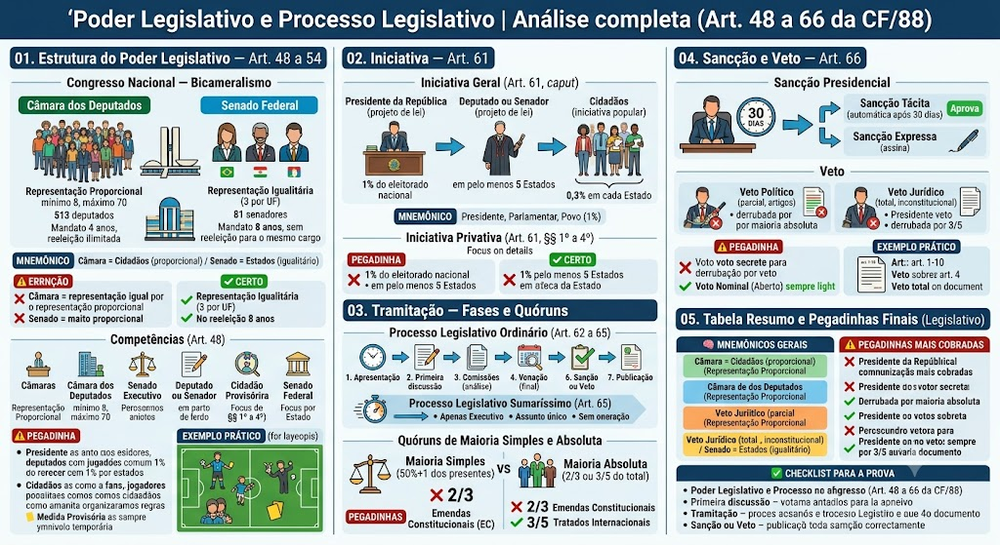
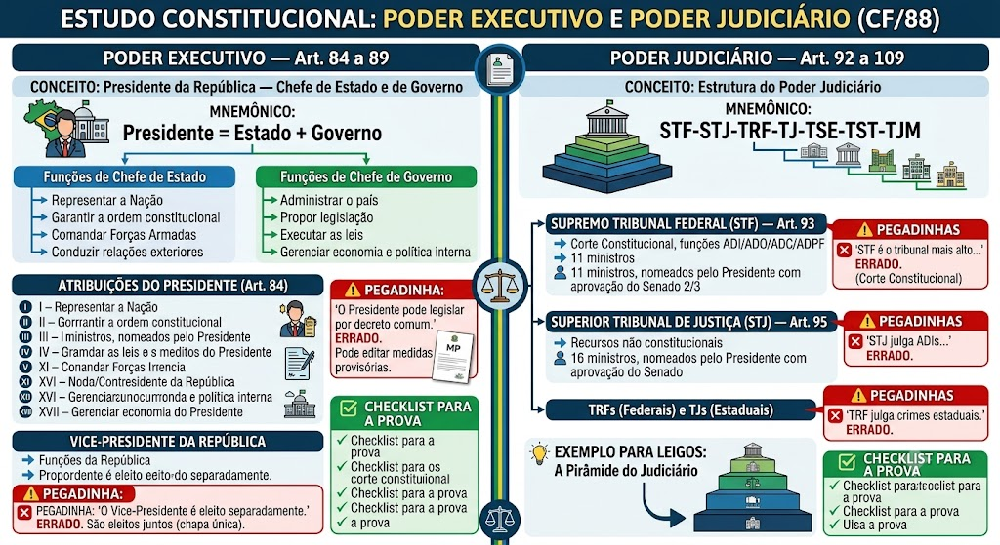

Congresso Nacional — Bicameralismo
Congresso Nacional — Bicameralismo
O Poder Legislativo é exercido pelo Congresso Nacional, que é bicameral (duas casas):
- Câmara dos Deputados — representação proporcional por Estado e DF.
- Senado Federal — representação igualitária (3 por Estados e DF).
Competências (Art. 48, caput):
- Legislar com a CF como limite;
- Autorizar a saída de tropas;
- Fiscalizar o Poder Executivo;
- Declarar a guerra;
- Aprovar o orçamento;
- Criar e extinguir ministérios;
- Processar o Presidente da República por crimes de responsabilidade.
🧠 MNEMÔNICO: 'Câmara = Cidadãos (proporcional) / Senado = Estados (igualitário)'
Composição da Câmara dos Deputados
Composição da Câmara dos Deputados
Representação: proporcional ao número de eleitores de cada Estado e do DF, com mínimo de 8 e máximo de 70 deputados por Estado (Art. 14, §1º, inciso II, alínea 'a').
Total de deputados: 513 (500 distribuídos entre Estados + 13 do DF).
Mandato: 4 anos, com reeleição ilimitada.
Presidente da Câmara: eleito entre seus pares, por voto direto e secreto, por 2 anos (Art. 50, §1º). Pode ser reeleito uma vez consecutivamente.
Composição do Senado Federal
Composição do Senado Federal
Representação: 3 senadores por Estado e pelo DF (Art. 14, §1º, inciso II, alínea 'b'), totalizando 81 senadores.
Mandato: 8 anos, sem reeleição para o mesmo cargo (Art. 15, §1º). Os 81 senadores são divididos em 3 períodos de 3 anos (sucessivos), com 1/3 renascendo a cada 2 anos.
Presidente do Senado: eleito entre seus pares, por voto secreto, por 2 anos (Art. 51, §1º). Pode ser reeleito uma vez consecutivamente.
⚠️ Pegadinha: A banca afirma que Senador pode ser reeleito para o mesmo cargo. ERRADO. Senador tem mandato de 8 anos e não há reeleição para o mesmo cargo.
⚠️ Pegadinha: Bicameralismo
⚠️ Pegadinha: Bicameralismo
❌ 'A Câmara dos Deputados tem representação igualitária.' → ERRADO. É proporcional.
❌ 'O Senado Federal tem representação proporcional.' → ERRADO. É igualitária (3 por Estado/DF).
❌ 'Senador pode ser reeleito para o mesmo cargo.' → ERRADO. Mandato de 8 anos, sem reeleição.
Iniciativa Geral (Art. 61, caput)
Iniciativa Geral (Art. 61, caput)
Art. 61, caput: 'Caberá ao Poder Executivo e ao Poder Legislativo propor a legislação complementar, especial e ordinária, bem como ao cidadão, por meio de iniciativa popular, nos termos desta Constituição.'
Quem pode iniciar leis:
- Presidente da República (projeto de lei);
- Deputado ou Senador (projeto de lei);
- Cidadãos (iniciativa popular — requer 1% do eleitorado nacional, distribuídos em 5 Estados com 0,3% em cada);
- Mesa do Senado (medida provisória);
- Mesa da Câmara (medida provisória);
- Presidente da República (medida provisória).
🧠 MNEMÔNICO: 'Presidente, Parlamentar, Povo (1%)' — os três iniciadores principais.
Iniciativa Privativa (Art. 61, §§ 1º a 4º)
Iniciativa Privativa (Art. 61, §§ 1º a 4º)
Art. 61, §1º: 'A iniciativa privativa de lei será apresentada por 1% (um por cento) do eleitorado nacional, distribuída em pelo menos 5 (cinco Estados, com 0,3% (três décimos de um por cento) em cada um deles.'
Requisitos para iniciativa popular:
- 1% do eleitorado nacional (aproximadamente 1,2 milhão de eleitores);
- Distribuída em pelo menos 5 Estados;
- 0,3% em cada Estado (aproximadamente 70 mil por Estado);
- Prazo: 90 dias para coletar as assinaturas.
Iniciativa parlamentar (Art. 61, §2º):
- O deputado ou senador pode apresentar projeto de lei individual ou coletivo (com outros parlamentares).
Iniciativa do Poder Executivo (Art. 61, §3º):
- O Presidente da República pode enviar projetos de lei ao Congresso.
⚠️ Pegadinha: A banca afirma que a iniciativa popular exige 1% do eleitorado em cada Estado. ERRADO. É 1% do eleitorado nacional, distribuído em pelo menos 5 Estados com 0,3% em cada.
Para Leigos – Quem pode propor lei?
Para Leigos – Quem pode propor lei?
Pense no Congresso como um jogo de futebol:
- Presidente da República é como o árbitro que pode sugerir regras (projeto de lei).
- Deputados e Senadores são os jogadores que podem propor mudanças no jogo (projetos de lei).
- Cidadãos são os torcedores que, se organizarem bem (1% do eleitorado em 5 Estados), podem propor uma nova regra (iniciativa popular).
- Medida Provisória é como um 'cartão amarelo' que o Presidente pode mostrar para resolver algo rápido, mas o Congresso precisa confirmar depois.
Processo Legislativo Ordinário (Art. 62 a 65)
Processo Legislativo Ordinário (Art. 62 a 65)
O processo legislativo ordinário tem as seguintes fases:
1. Apresentação do projeto (iniciativa);
2. Primeira discussão (primeira leitura) — exposição do texto;
3. Comissões — análise técnica e parecer;
4. Segunda discussão (segunda leitura) — debate geral;
5. Votação (terceira leitura) — votação final;
6. Sanção ou veto do Presidente;
7. Publicação da lei.
Quóruns:
- Maioria simples: mais da metade dos votos dos presentes (para a maioria das leis).
- Maioria absoluta: 2/3 (60%) ou 3/5 (60%) dos votos de cada Casa (para leis de reforma administrativa, emendas constitucionais, etc.).
⚠️ Pegadinha: A banca afirma que a votação de leis ordinárias exige maioria absoluta. ERRADO. A maioria é simples (mais da metade dos presentes).
Processo Legislativo Sumaríssimo (Art. 65)
Processo Legislativo Sumaríssimo (Art. 65)
Art. 65: 'As leis de iniciativa exclusiva do Poder Executivo, que versarem sobre apenas um assunto e não imponham oneração ao orçamento ou ao fisco, serão tratadas em regime de tramitação sumaríssima.'
Características:
- Iniciativa exclusiva do Executivo (não pode vir de parlamentares ou cidadãos);
- Apenas um assunto (monocrética);
- Sem oneração ao orçamento ou fisco;
- Tramitação acelerada (sem passar por comissões).
Fases:
1. Apresentação;
2. Primeira e segunda leituras (no mesmo dia);
3. Votação (terceira leitura);
4. Sanção ou veto.
⚠️ Pegadinha: A banca afirma que o processo sumaríssimo pode ser usado para qualquer lei. ERRADO. Só para leis do Executivo, monocêntricas e sem oneração.
Quóruns de Maioria Simples e Absoluta
Quóruns de Maioria Simples e Absoluta
Maioria Simples (50% + 1):
- Mais da metade dos votos dos parlamentares presentes.
- Usada para a maioria das leis ordinárias.
Maioria Absoluta (2/3 ou 3/5):
- 2/3 (66,67%): para emendas constitucionais (Art. 60, caput), leis de iniciativa exclusiva do Poder Executivo em regime de tramitação sumaríssima (Art. 65, §1º).
- 3/5 (60%): para tratados internacionais (Art. 49, VII), emendas que alteram a forma federativa (Art. 60, §3º).
🧠 MNEMÔNICO: 'Simples = 50%+1 / Absoluta = 2/3 ou 3/5'.
⚠️ Pegadinha: A banca afirma que emendas constitucionais exigem 3/5. ERRADO. Exigem 2/3 (Art. 60, caput).
⚠️ Pegadinhas Frequentes
⚠️ Pegadinhas Frequentes
❌ 'Leis ordinárias exigem maioria absoluta.' → ERRADO (maioria simples).
❌ 'Emendas constitucionais exigem 3/5.' → ERRADO (exigem 2/3).
❌ 'Processo sumaríssimo é para qualquer lei.' → ERRADO (só para leis do Executivo, monocêntricas, sem oneração).
❌ 'Iniciativa popular exige 1% em cada Estado.' → ERRADO (1% nacional, 0,3% em 5 Estados).
Sancção Presidencial
Sancção Presidencial
Art. 66, caput: 'O Presidente da República não vedará ao Congresso Nacional, no prazo de 30 (trinta) dias, a lei que lhe for enviada, sancionando-a ou vedando-a, total ou parcialmente.'
Prazo: 30 dias para o Presidente sancionar ou vetar a lei.
Tipos de sanção:
- Sanção tácita: se o Presidente não se manifestar em 30 dias, a lei entra em vigor automaticamente.
- Sanção expressa: o Presidente assina a lei.
- Veto: o Presidente rejeita a lei (total ou parcial).
Veto Político e Veto Jurídico
Veto Político e Veto Jurídico
Veto Político (parcial):
- O Presidente veta apenas alguns artigos ou parágrafos do projeto.
- O Congresso pode derrubar por maioria absoluta (Art. 66, §4º, parágrafo único).
Veto Jurídico (total):
- O Presidente veta todo o projeto por considerá-lo inconstitucional.
- O Congresso pode derrubar por 3/5 dos votos de cada Casa (Art. 66, §4º, parágrafo único).
Derrubada de veto:
- Voto nominal (aberto): hoje é obrigatório (Lei 13.105/2015, art. 10, §1º).
- Prazo: 30 dias para a Câmara e 30 dias para o Senado.
⚠️ Pegadinha: A banca afirma que a derrubada de veto pode ser por voto secreto. ERRADO. É sempre nominal (voto aberto).
Para Leigos – O Veto Presidencial
Para Leigos – O Veto Presidencial
Imagine que o Congresso aprova uma lei com 10 artigos. O Presidente lê e pensa:
- 'Artigos 1, 2 e 3 estão ótimos, mas o artigo 4 é inconstitucional.' → Veto parcial (político) apenas do artigo 4. O Congresso precisa de maioria absoluta para derrubar.
- 'Toda a lei é inconstitucional.' → Veto total (jurídico). O Congresso precisa de 3/5 para derrubar.
- 'Não vou me manifestar em 30 dias.' → Sanção tácita. A lei entra em vigor automaticamente.
🧠 MNEMÔNICOS GERAIS
🧠 MNEMÔNICOS GERAIS
- 'Câmara = proporcional / Senado = igualitário' — representação nas duas casas.
- '1% nacional, 0,3% em 5 Estados' — iniciativa popular.
- '50%+1 = simples / 2/3 ou 3/5 = absoluta' — quóruns.
- '30 dias = sanção/veto / 30+30 = derrubada' — prazos.
- 'Veto parcial = político / Veto total = jurídico' — tipos de veto.
- 'Voto nominal (aberto) = derrubada de veto' — sempre aberto hoje.
⚠️ Pegadinhas Mais Cobradas
⚠️ Pegadinhas Mais Cobradas
❌ 'Senador pode ser reeleito para o mesmo cargo.' → ERRADO (8 anos, sem reeleição).
❌ 'Leis ordinárias exigem maioria absoluta.' → ERRADO (maioria simples).
❌ 'Emendas constitucionais exigem 3/5.' → ERRADO (exigem 2/3).
❌ 'Iniciativa popular exige 1% em cada Estado.' → ERRADO (1% nacional, 0,3% em 5 Estados).
❌ 'Derrubada de veto é por voto secreto.' → ERRADO (é nominal/aberto).
❌ 'Veto parcial exige 3/5 para derrubar.' → ERRADO (exige maioria absoluta; 3/5 é para veto jurídico).
✅ CHECKLIST PARA A PROVA
✅ CHECKLIST PARA A PROVA
✅ Congresso Nacional: Câmara (proporcional, 4 anos) + Senado (igualitário, 8 anos, sem reeleição).
✅ Iniciativa: Presidente, parlamentar, cidadãos (1% nacional, 0,3% em 5 Estados).
✅ Processo ordinário: 3 leituras + comissões + sanção/veto.
✅ Processo sumaríssimo: Executivo, monocrético, sem oneração, tramitação acelerada.
✅ Quóruns: simples (50%+1), absoluta (2/3 para EC, 3/5 para tratados).
✅ Sanção: 30 dias. Veto parcial (político) e total (jurídico).
✅ Derrubada de veto: maioria absoluta (parcial) ou 3/5 (jurídico), voto nominal (aberto).
Mapa-mental
Presidente da República — Chefe de Estado e de Governo
Presidente da República — Chefe de Estado e de Governo
No presidencialismo brasileiro, o Presidente da República é simultaneamente Chefe de Estado e Chefe de Governo (Art. 84, caput).
Funções de Chefe de Estado:
- Representar a Nação;
- Garantir a ordem constitucional;
- Comandar as Forças Armadas;
- Conduzir relações exteriores.
Funções de Chefe de Governo:
- Administrar o país;
- Propor a legislação;
- Executar as leis;
- Gerenciar a economia e a política interna.
🧠 MNEMÔNICO: 'Presidente = Estado + Governo' — no Brasil, as duas funções são acumuladas no mesmo cargo.
Atribuições do Presidente (Art. 84, caput e parágrafos)
Atribuições do Presidente (Art. 84, caput e parágrafos)
Art. 84, caput: 'O Presidente da República dirige a política nacional, com as funções de chefe de Estado e de governo, sendo o chefe da execução, e tem as seguintes atribuições:'
Principais atribuições (Art. 84, I a XVII):
- I: Legislar com decreto (medida provisória);
- II: Sanctionar ou vetar leis;
- III: Manter a ordem pública;
- IV: Organizar a administração pública;
- V: Conduzir a política nacional de defesa;
- VI: Conduzir a política nacional de relações exteriores;
- VII: Celebrar tratados e convenções internacionais;
- VIII: Conduzir a política nacional de economia;
- IX: Nomear e exonerar ministros;
- X: Nomear juízes do STF (com aprovação do Senado);
- XI: Nomear e exonerar embaixadores;
- XII: Nomear comissões reguladoras;
- XIII: Comandar as Forças Armadas;
- XIV: Declarar estado de sítio e estado de defesa;
- XV: Nomear governadores de Territórios Federais;
- XVI: Promulgar leis e decretos;
- XVII: Outras atribuições definidas em lei.
⚠️ Pegadinha: A banca afirma que o Presidente pode legislar por decreto. ERRADO. O Presidente pode editar medidas provisórias (que têm força de lei), mas não decrees comuns.
Vice-Presidente da República
Vice-Presidente da República
O Vice-Presidente é eleito na mesma chapa do Presidente (Art. 12, §4º, II).
Funções:
- Substituir o Presidente em caso de impedimento;
- Presidir o Conselho de Segurança Nacional;
- Coordenar a articulação do governo no Congresso.
Eleição: voto direto e secreto, na mesma chapa do Presidente.
⚠️ Pegadinha: A banca afirma que o Vice-Presidente é eleito separadamente do Presidente. ERRADO. São eleitos juntos (chapa única).
⚠️ Pegadinhas Frequentes
❌ 'O Presidente pode legislar por decreto comum.' → ERRADO (medida provisória, não decreto).
❌ 'O Vice-Presidente é eleito separadamente.' → ERRADO (chapa única).
❌ 'O Presidente pode nomear ministros sem aprovação do Senado.' → ERRADO (exige aprovação do Senado para ministros do STF).
Estrutura do Poder Judiciário
Estrutura do Poder Judiciário
O Poder Judiciário é organizado em dois ramos principais:
1. Justiça Comum:
- STF (Supremo Tribunal Federal): corte constitucional, competência sobre ações direitas de inconstitucionalidade, ADPF, ADI, ADC, ADO.
- STJ (Superior Tribunal de Justiça): competência sobre recursos federais de matéria não constitucional.
- TRFs (Tribunais Regionais Federais): 4 regiões, competência sobre crimes federais e ações federais.
- TJs (Tribunais de Justiça): 1 por Estado e DF, competência sobre matéria estadual.
- Justiça Especial Cível e Criminal: competência sobre causas de menor complexidade.
2. Justiça Especial:
- TSE (Tribunal Superior Eleitoral): competência sobre matéria eleitoral.
- TST (Tribunal Superior do Trabalho): competência sobre matéria trabalhista.
- TJMs (Tribunais Militares): competência sobre crimes militares.
🧠 MNEMÔNICO: 'STF-STJ-TRF-TJ-TSE-TST-TJM' — ordem de hierarquia.
Supremo Tribunal Federal (STF) — Art. 93
Supremo Tribunal Federal (STF) — Art. 93
Função: é a corte constitucional do Brasil, com competência para:
- Julgar ações diretas de inconstitucionalidade (ADI, ADO);
- Julgar ações declaratórias de constitucionalidade (ADC);
- Julgar arguições de descumprimento de preceito fundamental (ADPF);
- Julgar recursos de constitucionalidade;
- Julgar ações penais de crimes de responsabilidade;
- Julgar ações de improbidade administrativa de alta relevância.
Composição: 11 ministros, nomeados pelo Presidente da República com aprovação do Senado Federal, por 2/3 (Art. 10, caput).
Presidente do STF: eleito pelo plenário, por 2 anos, entre os ministros.
⚠️ Pegadinha: A banca afirma que o STF é o tribunal mais alto do Brasil. ERRADO. O STF é a corte constitucional; o STJ é o tribunal de recurso mais alto para matérias não constitucionais.
Superior Tribunal de Justiça (STJ) — Art. 95
Superior Tribunal de Justiça (STJ) — Art. 95
Função: é o tribunal de recurso mais alto para matérias não constitucionais (direito comum, direito penal comum, direito processual comum).
Competências principais:
- Recursos de matéria não constitucional;
- Ações de constitucionalidade indireta (quando o STF não tem competência);
- Julgamento de crimes federais de menor complexidade.
Composição: 16 ministros, nomeados pelo Presidente da República com aprovação do Senado Federal.
⚠️ Pegadinha: A banca afirma que o STJ julga ações de inconstitucionalidade. ERRADO. O STJ julga recursos de constitucionalidade (quando o STF não tem competência), mas não ações diretas de inconstitucionalidade (ADI, ADO, ADPF).
Tribunais Regionais Federais (TRFs) e Tribunais de Justiça (TJs)
Tribunais Regionais Federais (TRFs) e Tribunais de Justiça (TJs)
TRFs (Tribunais Regionais Federais):
- 4 regiões (SP/RJ/EI, RJ/ES/RR, DF/GO/MT/TO, RS/SC/PR).
- Competência sobre crimes federais e ações federais.
- Presidente nomeado pelo STF.
TJs (Tribunais de Justiça):
- 1 por Estado e DF.
- Competência sobre matéria estadual (crimes estaduais, ações cíveis estaduais).
- Presidente eleito entre os desembargadores.
Justiça Especial:
- Competência sobre causas de menor complexidade (valor abaixo de 60 salários mínimos).
- Não há recursos (decisão é final).
⚠️ Pegadinha: A banca afirma que os TRFs julgam crimes estaduais. ERRADO. TRFs julgam crimes federais; TJs julgam crimes estaduais.
Para Leigos – A Pirâmide do Poder Judiciário
Para Leigos – A Pirâmide do Poder Judiciário
Pense no Poder Judiciário como uma pirâmide:
- Topo: STF (constitucional) e STJ (não constitucional).
- Meio: TRFs (federais) e TJs (estaduais).
- Base: Vários (juízos de primeiro grau).
- Laterais: TSE (eleitoral), TST (trabalho), TJMs (militar).
Cada nível tem uma 'especialidade': STF protege a Constituição, STJ protege o direito comum, TRFs lidam com crimes federais, TJs lidam com crimes estaduais.
🧠 MNEMÔNICOS GERAIS
- 'Presidente = Estado + Governo' — funções acumuladas no presidencialismo.
- 'STF-STJ-TRF-TJ-TSE-TST-TJM' — hierarquia do Poder Judiciário.
- 'STF = constitucional / STJ = não constitucional' — especialidades.
- 'TRF = federal / TJ = estadual' — competências.
- 'Chapa única' — Presidente e Vice eleitos juntos.
⚠️ Pegadinhas Mais Cobradas
❌ 'O Presidente pode legislar por decreto comum.' → ERRADO (medida provisória).
❌ 'O Vice-Presidente é eleito separadamente.' → ERRADO (chapa única).
❌ 'STF é o tribunal mais alto do Brasil.' → ERRADO (é a corte constitucional; STJ é o mais alto para não constitucional).
❌ 'STJ julga ADIs.' → ERRADO (STF julga ADIs; STJ julga recursos de constitucionalidade).
❌ 'TRF julga crimes estaduais.' → ERRADO (TJ julga crimes estaduais; TRF julga crimes federais).
✅ CHECKLIST PARA A PROVA
✅ Presidente: Chefe de Estado e Governo (presidencialismo), Art. 84 (17 atribuições).
✅ Vice-Presidente: eleito na chapa única, substitui o Presidente.
✅ STF: corte constitucional, 11 ministros, julga ADI/ADC/ADPF/ADO.
✅ STJ: tribunal de recursos não constitucionais, 16 ministros.
✅ TRFs: 4 regiões, crimes federais.
✅ TJs: 1 por Estado/DF, crimes estaduais.
✅ TSE: matéria eleitoral. TST: matéria trabalhista. TJMs: crimes militares.
Material de estudo: Poder Legislativo e Processo Legislativo
Material complementar · Ver fonte no GitHub
Tabela Resumo e Pegadinhas Finais (Legislativo)
Mapa-mental

Tabela Resumo e Pegadinhas Finais (Executivo e Judiciário)
Mapa-mental
